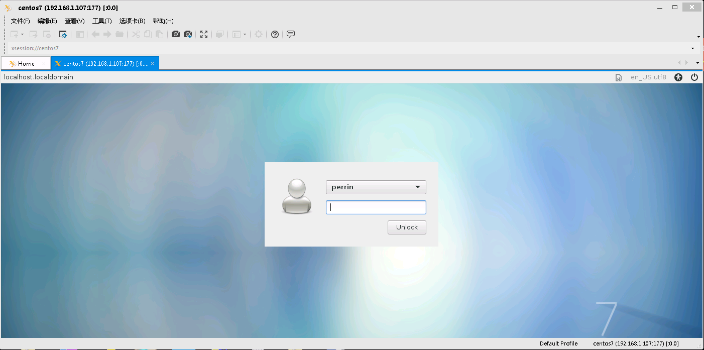

安装epel源
1 | yum install -y epel-release |
安装lightdm和xfce
1 | yum install -y lightdm |
修改配置文件
1 | vim /etc/lightdm/lightdm.conf |
内容如下
1 | [XDMCPServer] |
将Display Manager切换为lightdm
1 | systemctl disable gdm && systemctl enable lightdm |
启动lightdm
1 | systemctl start lightdm |
关闭防火墙
1 | systemctl stop firewalld.service |
登录
打开Xmanger客户端，选择XDMCP并输入服务器的ip，回车运行即可。
输入账号密码
然后就出现下图：（如果正常跳过这步）

或者出现黑屏提示无法建立连接
这是因为刚开始安装的是Gnome，所以系统默认使用它，现在要改成Xfce，最简单的方法就是把xfce.desktopz之外的文件都干掉。
1 | cd /usr/share/xsessions/ |
重新连接
一切正常操作之后就成功连接了。然后就可以快速便捷的工作了。